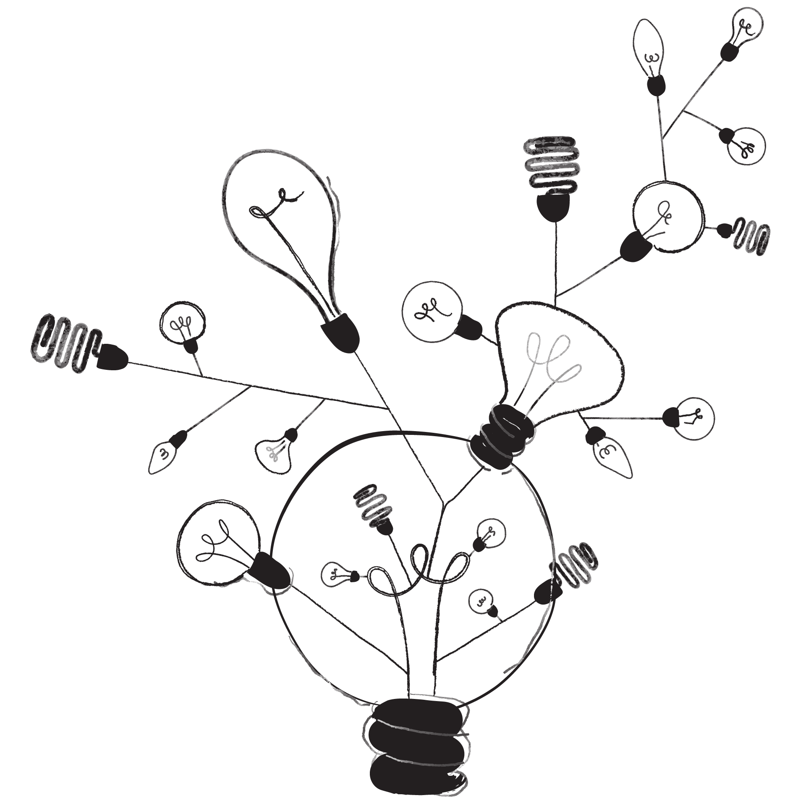

the thing about passion is ...
You peek down some roads and took a few steps before turning back.
You followed some roads that led to a dead end, and others that got lost at too many intersections.
Ultimately, all roads are connected to all other roads.
In learning this over the course of many years, I've realized that what matters most to me is making that decision.
There exists an art to making decisions. Waiting long enough before committing so that it isn't done impulsively, yet at the same time not waiting too long such that the moment passes, or that we remain stagnant.